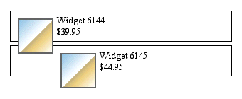
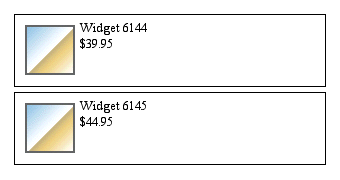

The probability that a developer has comes across a situation to with two block
components each containing a image inside it.
The result seen in Figure 1 happens because the div elements don't
stretch to contain the
floated images within them. To look at the situation from the reverse angle, it happens because the
floated images stick out of the bottom of the div elements.
This is not a bug. It's also not a flaw in CSS. It is, in fact, the behavior that most authors
will want most of the time. It's just not what they would want in the example shown.
If floats are to be used in creating non-table layouts, then there needs to be a way to make their containing elements stretch around them. At present, this requires a bit of a structural markup. Since we want the bottom of the containing element to be placed clear past the bottom of the float, then clear is our answer. We need only insert a block-level element just before the end of the container, and clear it. Consider:
<div class='item'>
<img src='w6144.gif' />Widget 6144 <br/>$39.95
<hr/>
</div>
<div class='item'>
<img src='w6145.gif' />Widget 6145 <br/>$44.95
<hr/>
</div>
Now we apply the following CSS rules to the preceding markup, and get the result shown below.
div.item hr {display: block; clear: left; margin: -0.66em 0; visibility: hidden;}

By ensuring that the hr elements are block-level, part of the normal flow, and cleared, we force the divs to stretch around the left-floated images.
To avoid over-use of the structural markup discussed so far, although they are still necessary at times. In most browsers, and as defined in CSS2.1, a floated element will expand to contain any floated elements that descend from it. So in our widget example, we could remove all of the clearer elements and instead write these styles:
div.item {float: left; border: 1px solid; padding: 5px; width: 60%;}
div.item img {float: left; margin: 5px;}
The clearing div effectively pushes the normal flow downward, forcing any following content to flow after the cleared element, and therefore after the floated divs.
The situation becomes fragile if these floats are part of a more complicated layout, one possibly using floats, positioning, or tables. his is not to say such layouts are impossible to achieve. They may, however, involve a good deal of trial and error to avoid obscure floating and other layout bugs that may lurk inside rendering engines.
float: left, float: right or float: none
A floated box is laid out according to the normal flow, then taken out of the flow and shifted to the left or right as far as possible. Content can flow down the right side of a left-floated box and down the left side of a right-floated box.
You can put several floats beside each other.
Floated boxes will move to the left or right until their outer edge touches the containing block edge or the outer edge of another float. If there isn't enough horizontal room on the current line for the floated box, it will move downward, line by line, until a line has room for it.
In general, You should set a width on floated items (except if applied directly to an image - which has implicit width). If no width is set, the results may be less predictable. Theoretically, a floated element with an undefined width should shrink to the widest element within it. This could be a word, a sentence or even a single character - and results can vary from browser to browser.
Block level elements above a floated element will not be affected by it. However, elements below will wrap around the floated element. While content will wrap around a floated element, border, background image and background color will extend underneath.
If you do not want elements below a floated element to wrap around it, you can apply the clear property to the following element using
clear: left, clear: right or clear: both
1. The first thing we need to remember is that a floating element is shifted either to the left or to the right. It is not possible to make an element float in the centre, something that often is frustrating for beginners. The basic rule is that a floating element is only shifted sideways.
2. If we float more elements in the same direction they will stack up, but sooner or later we’ll run out of space. When there is insufficient space on the line, they are shifted downward until they fit.
3. A floating box can never end up above the upper edge of the line where it’s created. The upper edge of a floating box is aligned with the upper edge of the current line box.